518th Fighter Squadron "Phi Long"

23rd Tactical Wing - Biên Hòa Air Base
The 518th Fighter Squadron was established on 1 January 1964, and it was the third fighter
squadron to be established. The squadron was nicknamed "Phi Long", which means "Flying Dragon".
The emblem of Squadron 518 is a golden dragon bust emerging from the center of a blue "S,"
symbolizing Vietnam. Its left hand (front leg) grasps a split red star located above the "S,"
representing North Vietnam's communism. The dragon's red mouth spits a white lightning bolt with
an arrowhead onto the star. All of this is set against a light blue background with a black
circular border, and the number 518 is written vertically from top to bottom. Squadron 518 shared
the former headquarters of Squadron 514 in Bien Hoa. In early April 1975, the 514th and 518th
Squadrons resumed operations, deployed to support the Phan Rang front as the North Vietnamese
communists advanced into Nha Trang, then withdrew to Bien Hoa, Tan Son Nhat, and Can Tho,
continuing fighting until noon on April 30th. At approximately 5:30 AM on April 29, 1975, the Air
Force Command deployed an A-1 patrol to take off immediately. Lieutenant Colonel Truong Phung
bravely volunteered to replace Lieutenant Pham Van Luom (who was unwell) to fly alongside Captain
Tran Van Phuc. The two brave A-1 bombers took off under enemy artillery fire. After two hours of
intense fighting, the shelling subsided, but only Captain Phuc returned to land. Lieutenant
Colonel Phung, the last A-1 bomber, heroically sacrificed himself in the 25th hour.
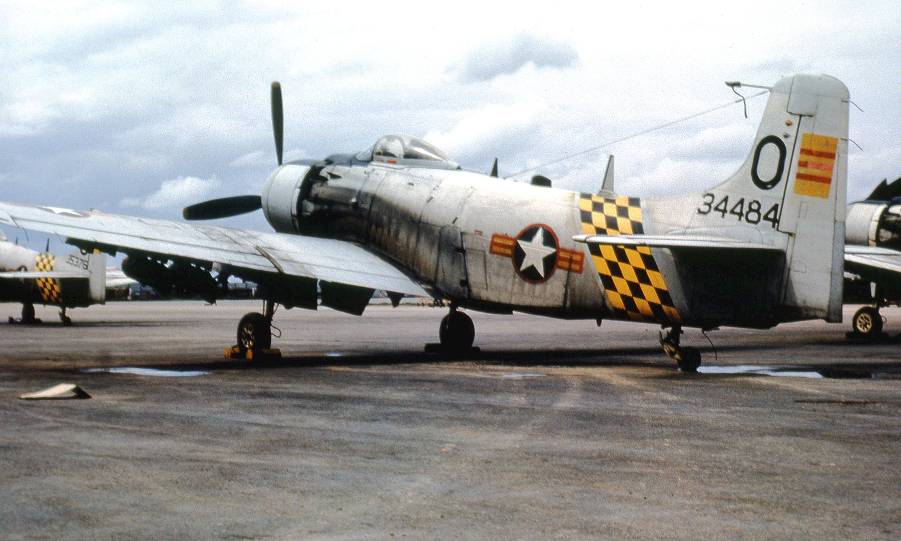
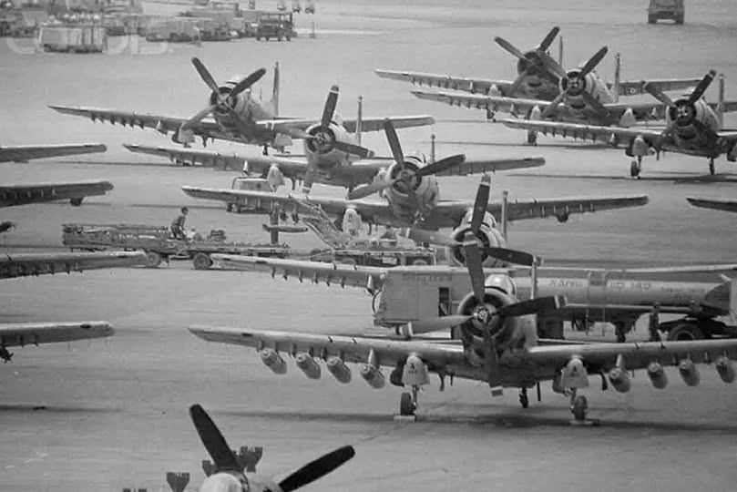
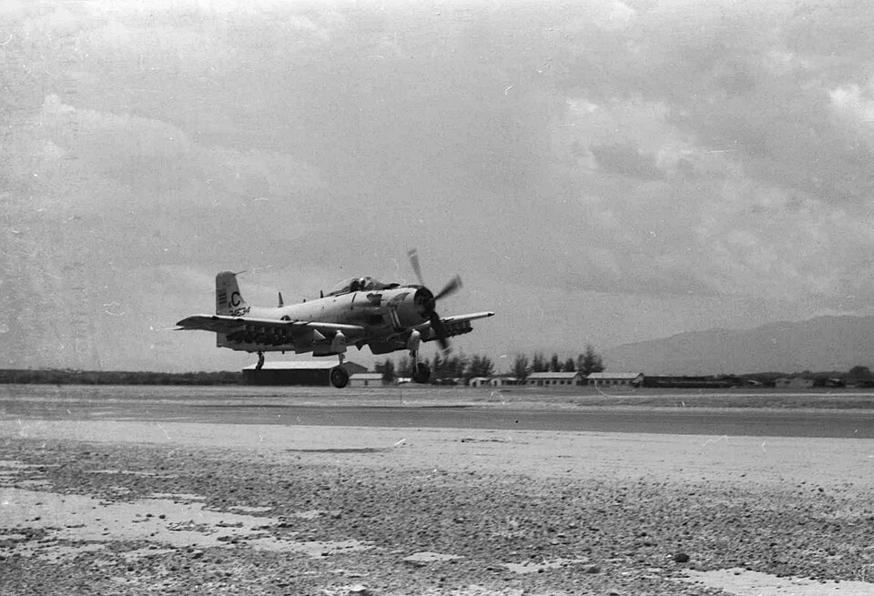
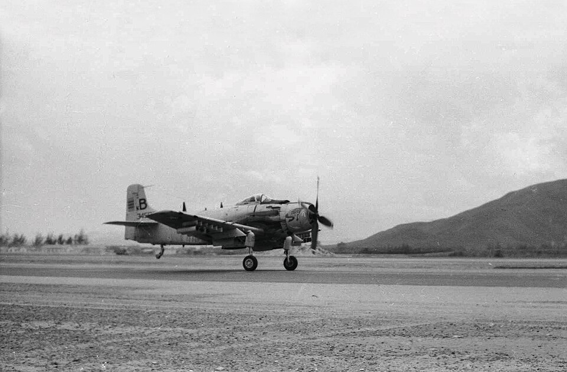
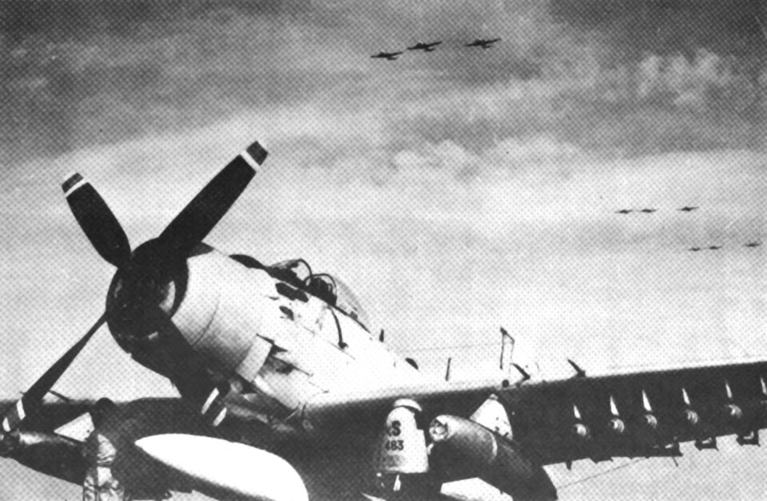
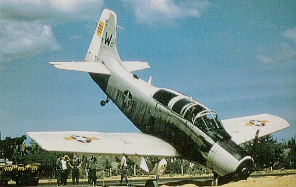
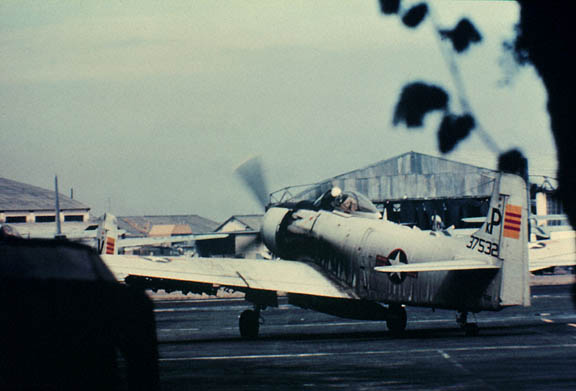
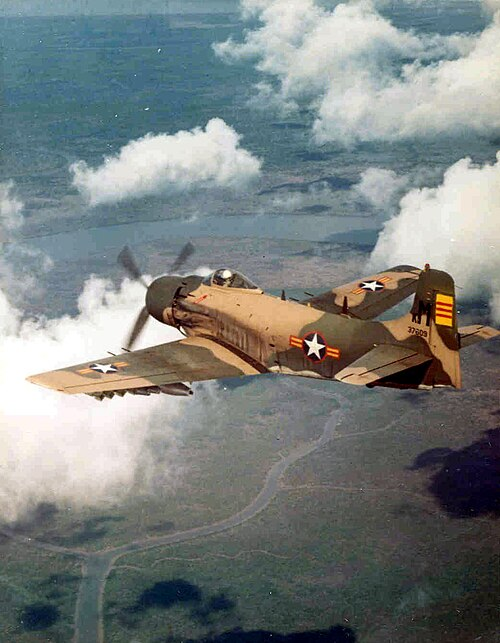
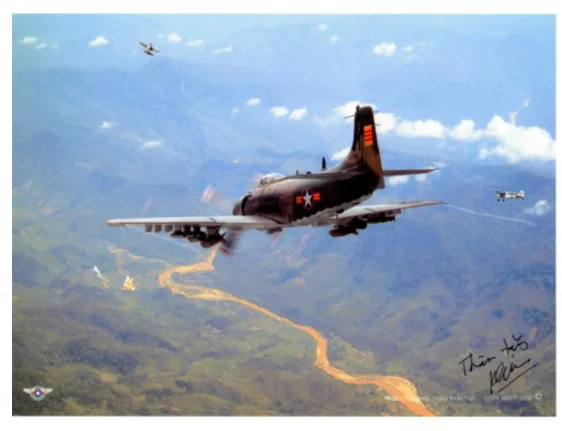
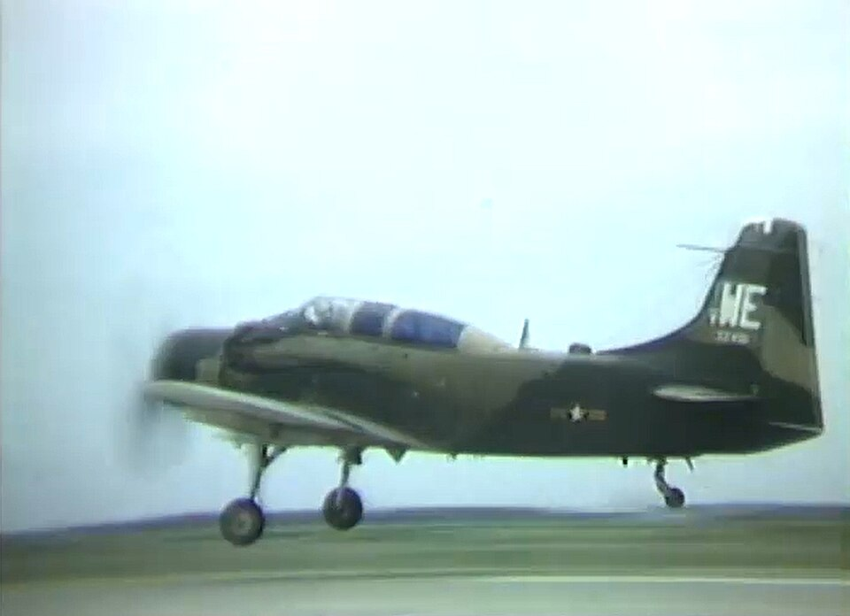
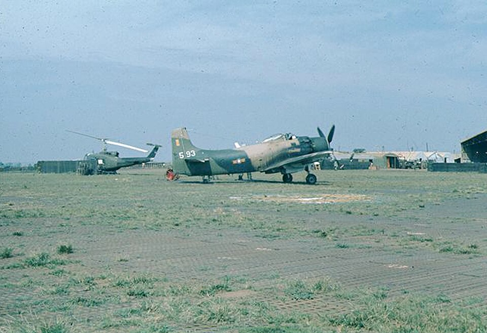
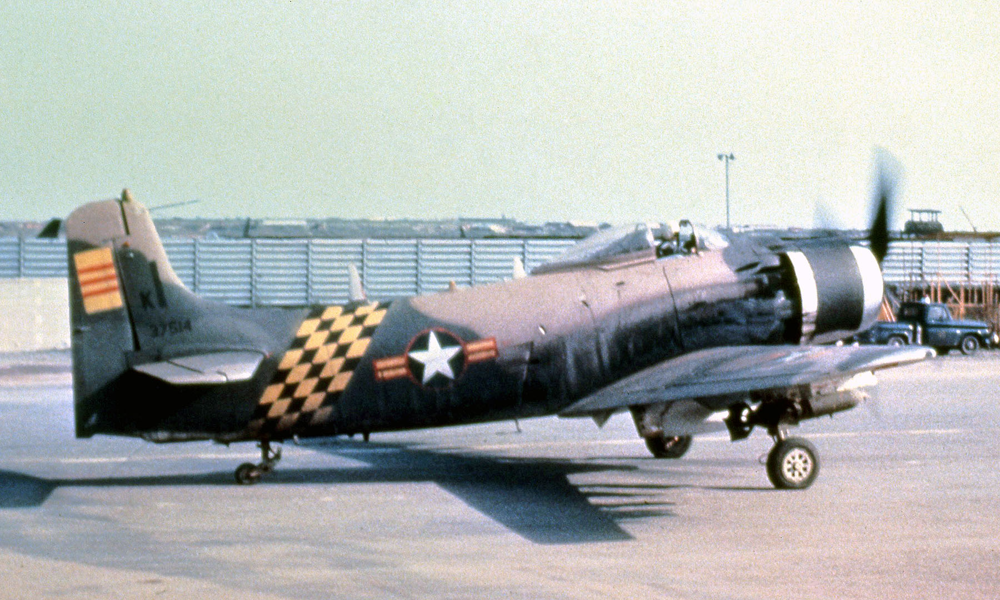
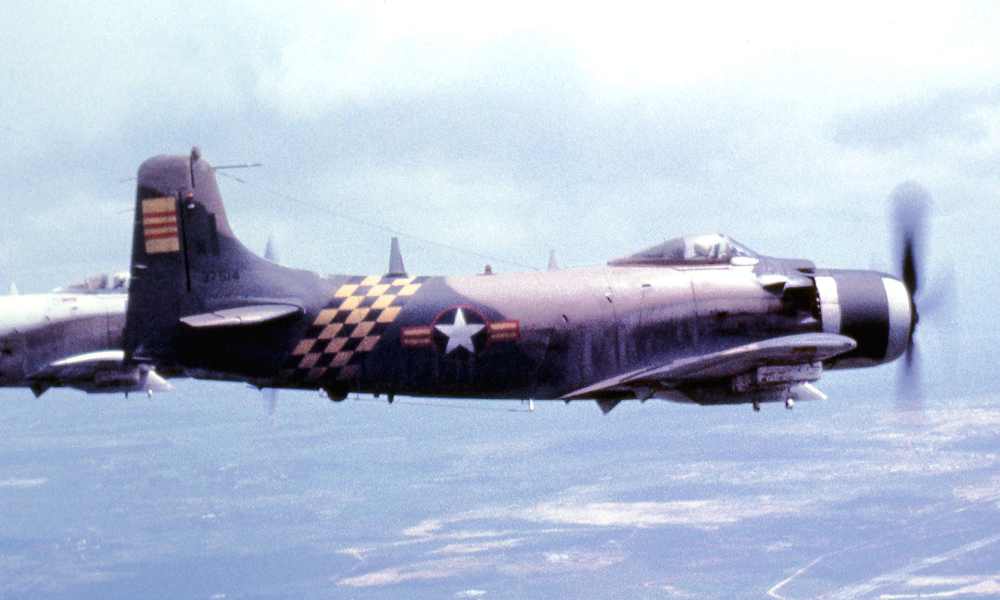
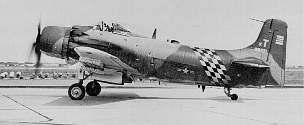
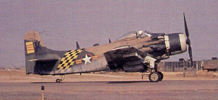
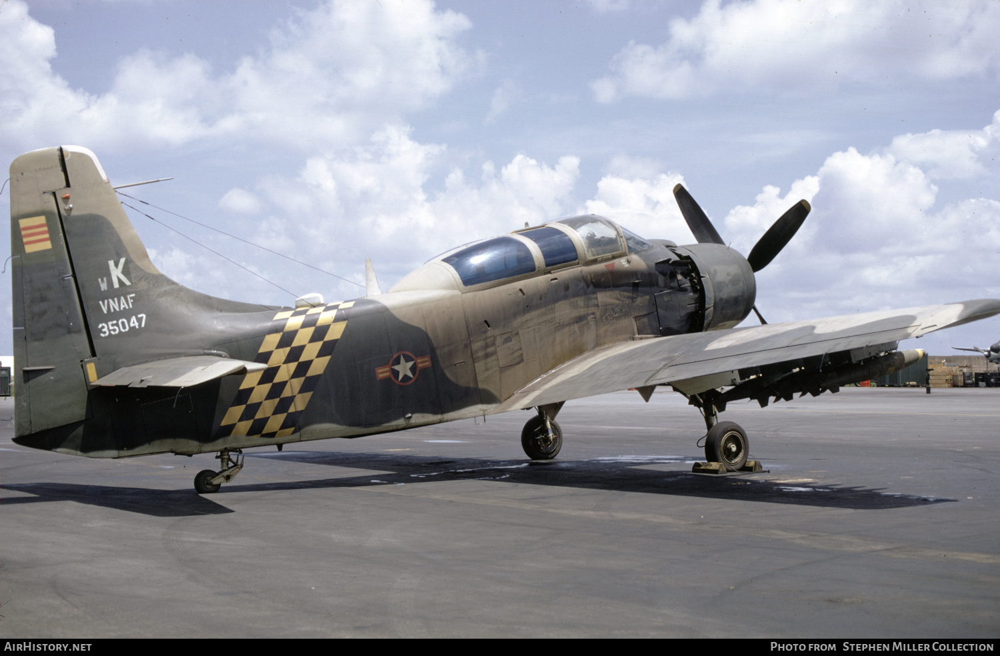
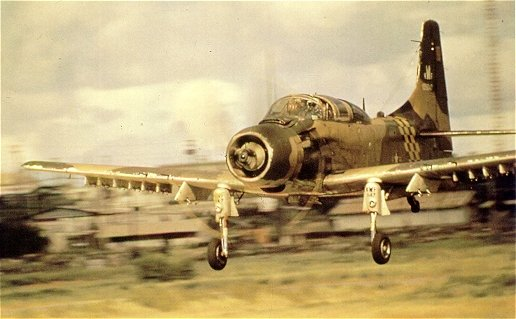
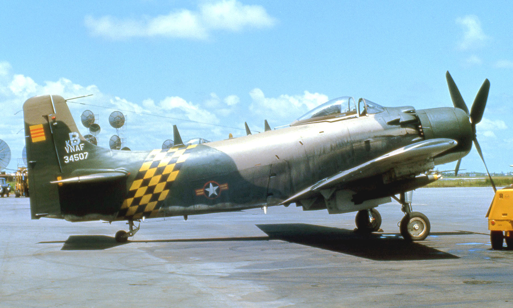
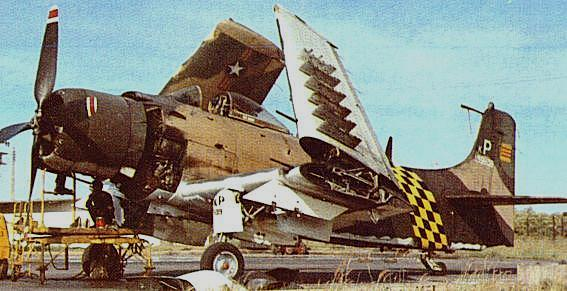
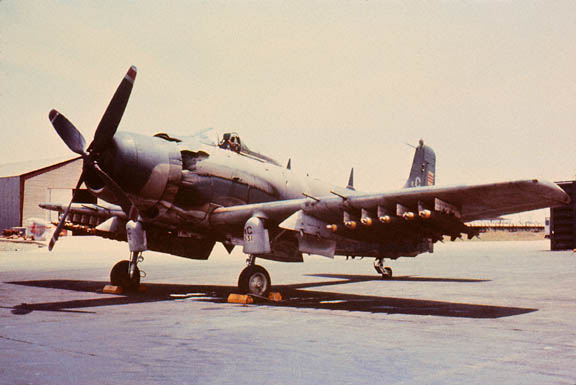
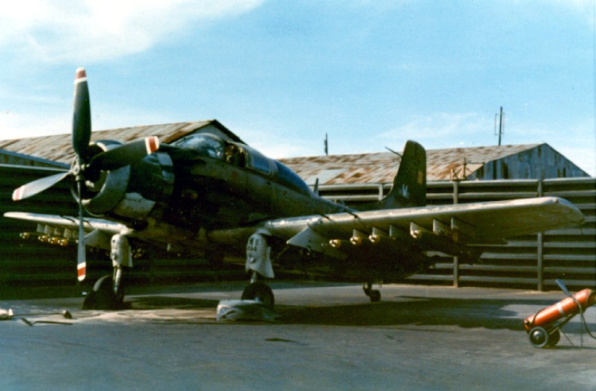
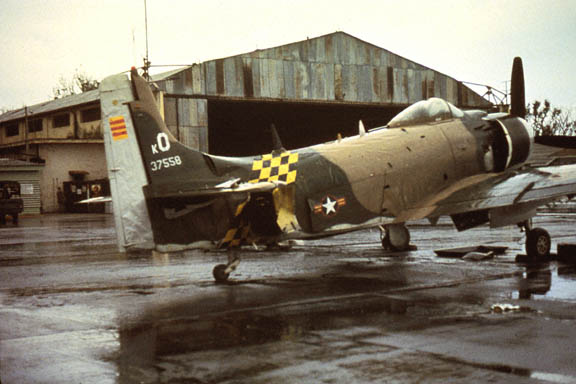
Click here for more reading on the 518th Fighter Squadron.